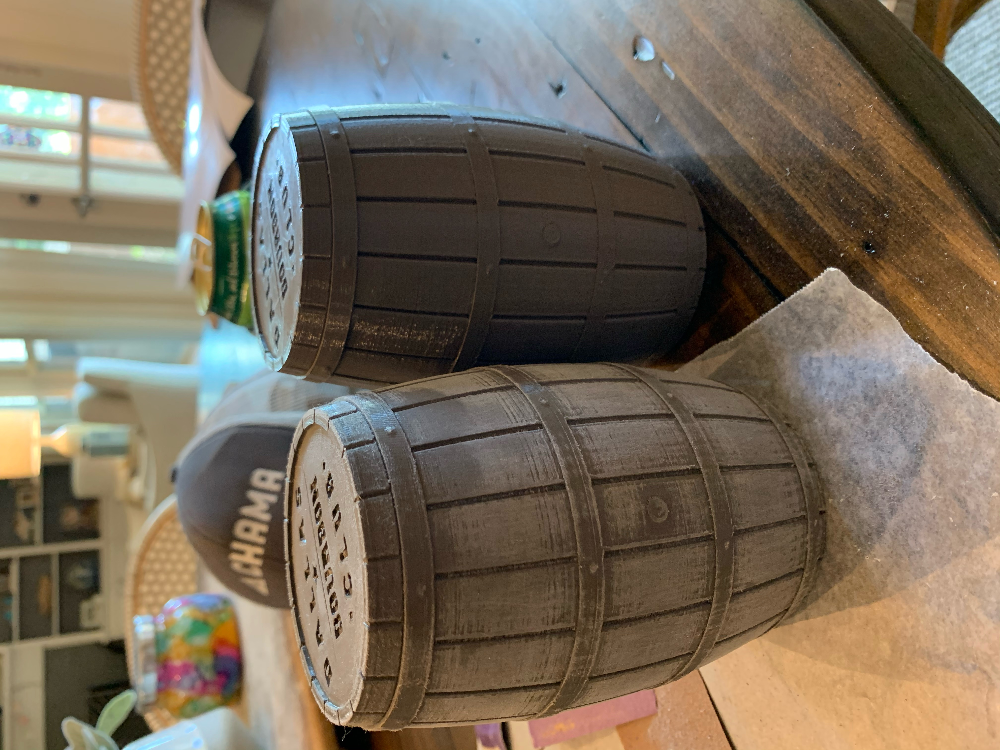
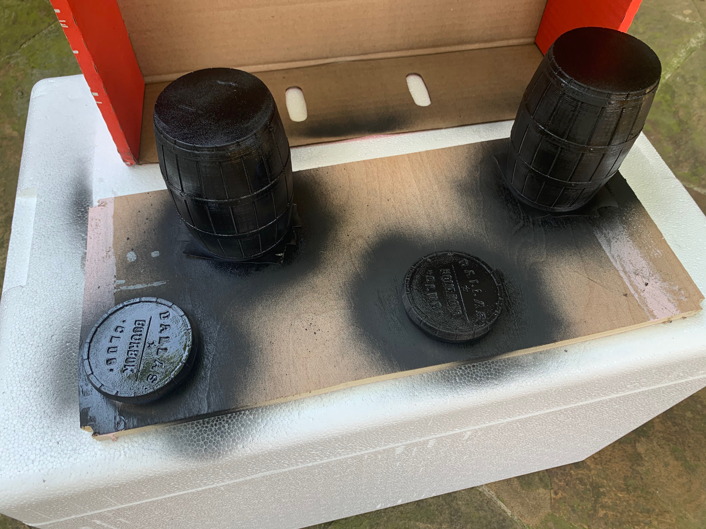
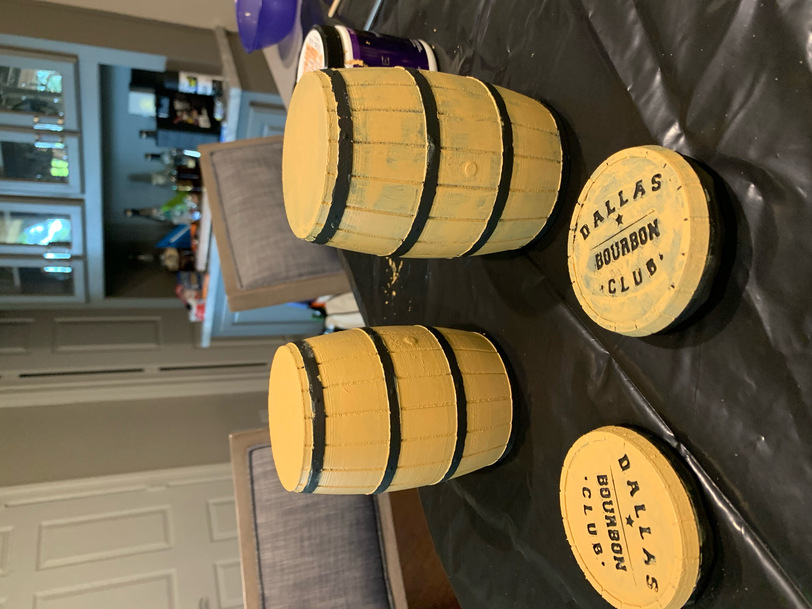
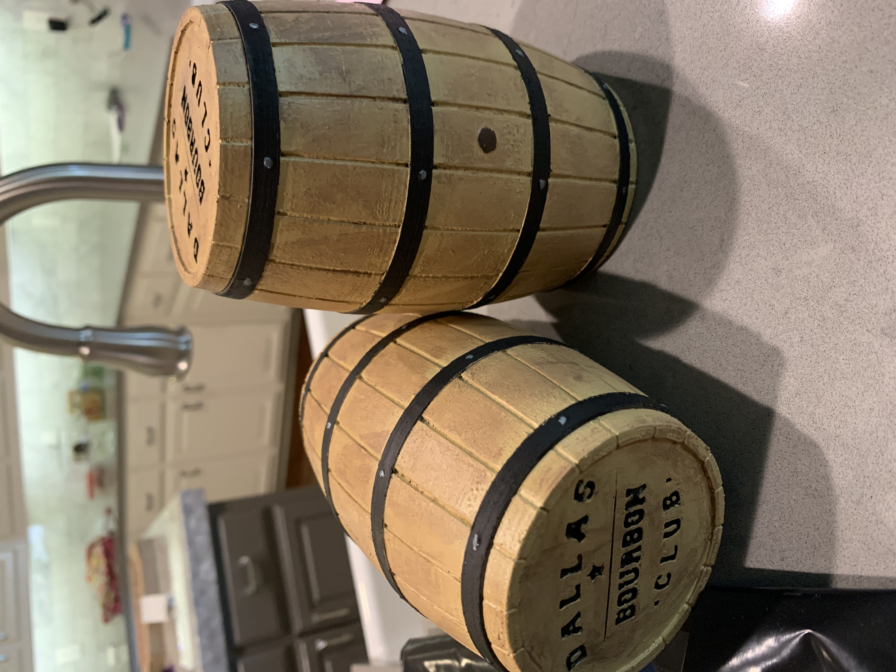

Getting Crafty with Michael Belvin
The 3D printed glencarin traveling case has been a huge hit around the club. It's a great gift idea for the bourbon lover in your life that already has everything (i.e it's a great gift to give yourself...you've been good this year). Much to the chagrin of my wife, I always bring this to a bourbon event or any kind of get together. She told me that I would never use something like this...and I'm the kind of person that goes out of their way to make a point.
Anyway, the other day, I saw Michael Belvin's glencarin case that had been totally tricked out and looked amazing. Jason made the great suggestion to have Michael take us through the process and tell us how he made his case look like the amazing product that you see above. Michael: take it away!
- In order to remove the 3D printing lines, sand the staves and heads of the barrel with 150 grit sandpaper making sure to avoid the hoops and bung area. Move to a 220 grit, then to 320 if you choose. This does not need to be uniform as barrels look beat up in warehouses and give it character. 
- Wash and dry off the barrels so you can spray paint the whole barrel with thin coats of a black primer. I did 3 coats. 
- Once dry, I hand painted the barrel staves and heads with a modeling paint using a small paint brush. Bob Ross style, I blended a yellow and brown to get a color that seemed to match what I thought resembled the right color and made some happy little decisions. Since I was covering black, it took 3 coats I believe. 
- Since the barrels needed to have an antiqued look, I dabbed a light amount of brown paint on a paper towel, wiped it on the staves, and quickly wiped off. This took me a minute to get my technique down. Again, irregularity is your friend here. 
- Touch ups on the hoops and "DBC" lettering with black modeling paint was next using the same paint brush. I taped off the staves on either side of the hoops so the lines would be clean. Tedious, but worth it. I also used the silver paint for the rivets and the brown paint for the bung.
- Lastly, I used a semi-gloss spray varnish (exterior of course for any inclement weather I might be sipping bourbon in). Similar to the primer coats, I did very thing layers and let them dry for about 30 minutes between coats. I did 2 coats the first day, let it dry overnight, sanded with 320 grit, and then did 2 more coats.
I am certainly missing something here as I am pulling this from memory, so I am happy to answer questions if you have them along the way or would love to hear how you improved on my process. Note the spouse may not approve of the bourboncentric focus of this project, so be prepared to buy some wine or take-out to offset 😊